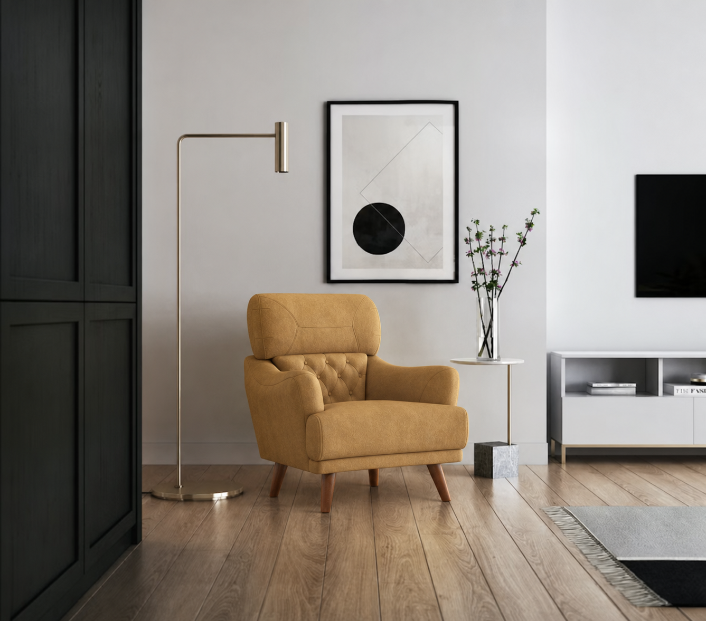
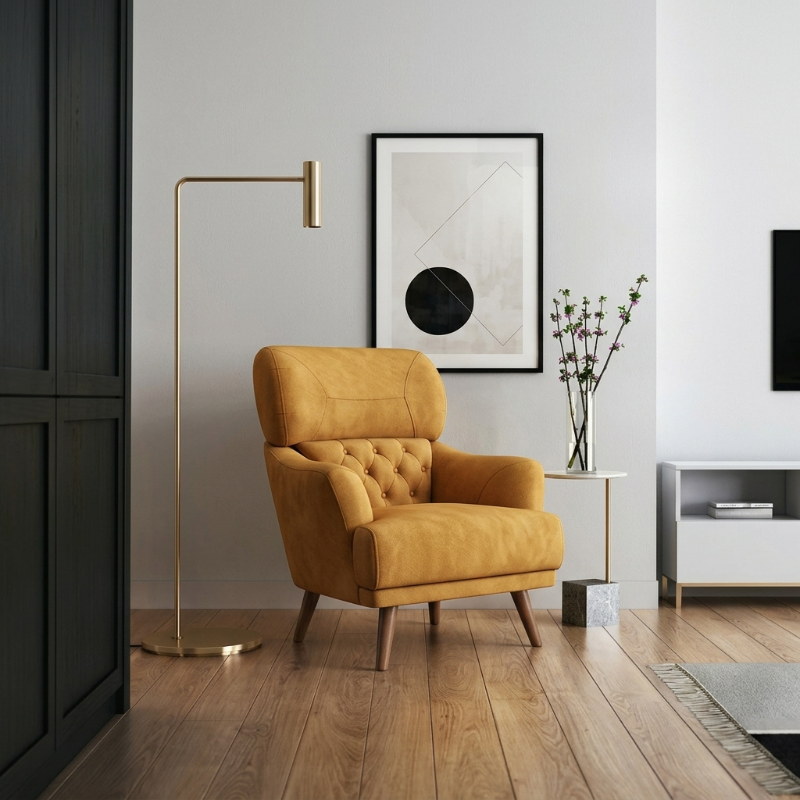

variant pick: It perfectly matches the color, material, and single-seater design of the accent armchair featured in the room. · reference: Shows the full 1-seater sofa from a clean front angle, but the upholstery is beige/cream instead of canary yellow.
· placement: replace the existing the canary yellow suede armchair in the center with it
customer roomchosen reference

composite · gpt-image-2

composite · gemini
room2_tan_sectional.png → Brown Sepia Suede Fabric 3 Seater Sofa
variant pick: Its warm, earthy tone perfectly complements the existing mid-century modern aesthetic, cognac leather palette, and cozy neutral textures of the room. · reference: Shows the full 3-seater sofa from a clean front angle, but the color is beige instead of brown sepia.
· placement: replace the existing brown leather sofa with chaise with it
variant pick: Its cool tone perfectly complements the room's existing light grey palette, curtains, and rug. · reference: It shows the full 1-seater armchair/sofa from a clean front angle, but the color is beige instead of ice grey.
· placement: on the right side of the rug, angled towards the main sofa near the knitted pouf